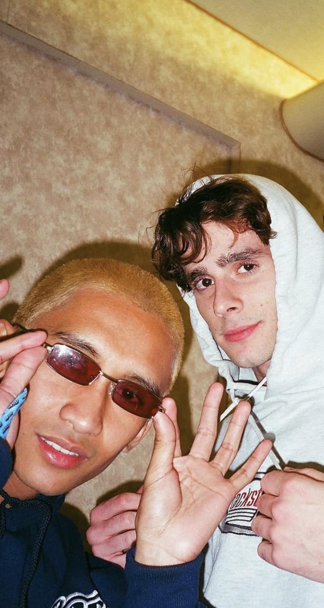

Dauphine’s Revival is a popular, Los Angeles based, indie rock band composed of two best friends, Luke and Sebastian. Recording all their music from their bedroom, the band has been able to build a loyal fan base. The band is always working on new stuff and can’t wait for you to hear it.
Thanks for listening and making our dreams come true. <3
Luke & Sebastian